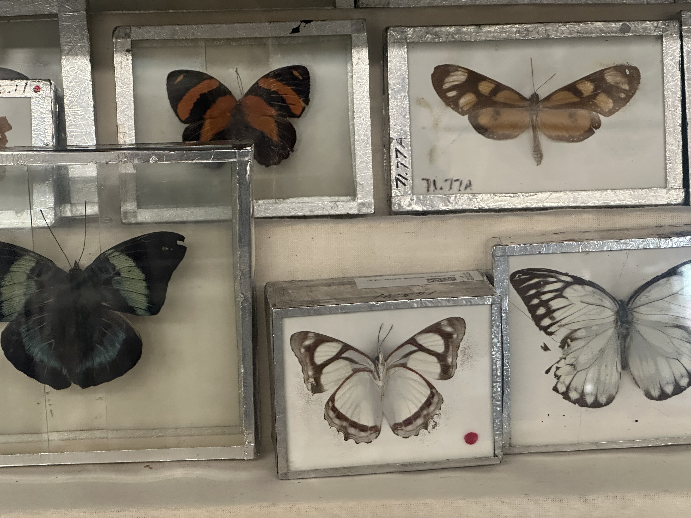
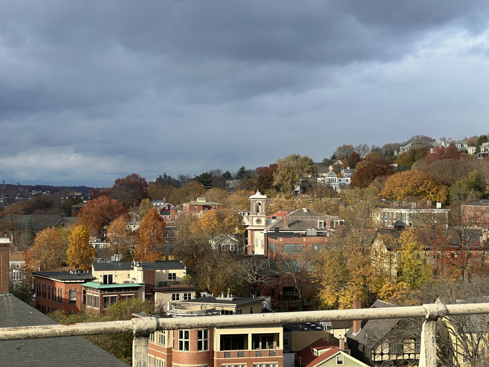

Anxious Redwood Crystal Breakaway Dreaming
Nov 19 2025

I am constantly waiting awaiting waiting awaiting in this dorm room for a drumrhythm midflight godforsaken heartbeat, thinking and redefining and thinking and redefining. Why can’t things just be daffodil picnics surmising burning talonbaskets by fernblanketed riverbanks? This dance is tiring, the acupuncture consumptive.
Have you seen the way the sonnets look at you? They are your murky captive, you are their messiah. They are your cardboard corset, you are their seamstress. They are your wheel, you the foreboding iron tractor, they coniferous, you the eager logger in pursuit of hardwood. Am I hardwood, am I pine? Ringed mountains could not capture the way I know the axe and I know the flannel. I know the taste of the rust of the hatchet by dawnlight, I know the taut rope stretched over lumberfacing truckyards trudging down gravelcaught roads. I know these things better than you can count my rings, over and under and over and under and over and under.
If people ask, I say waterfowl is my favorite shape. Waterfowl is free like i say I am. Gracious, momentary, skullshaped and withered, purgatorious and heavenly, unblinking. Silver feathers in constant wait for the hurtling frost. They say that’s how to know when to head south. I’m more coastal than you realize, I told you, roots all extended. Your metal laugh stopped when the interview got tough. Is there more syrup in my crystal teeth than I could ever expect, or more salt in my bones than you could know?
When the axe is too sharp, the boot chalk-frozen and the siren of the hearth too hot to resist, will the fish keep swimming? Will the icetrapped koi survive? Unslanted dirtfaced mudwork is dangerous for hardwood, you know that. What happens when the blade finds rust? Metal slices through the antigrain breakaway, I hope. You and I, let’s be hardwood and iron and stone together all at once.
 